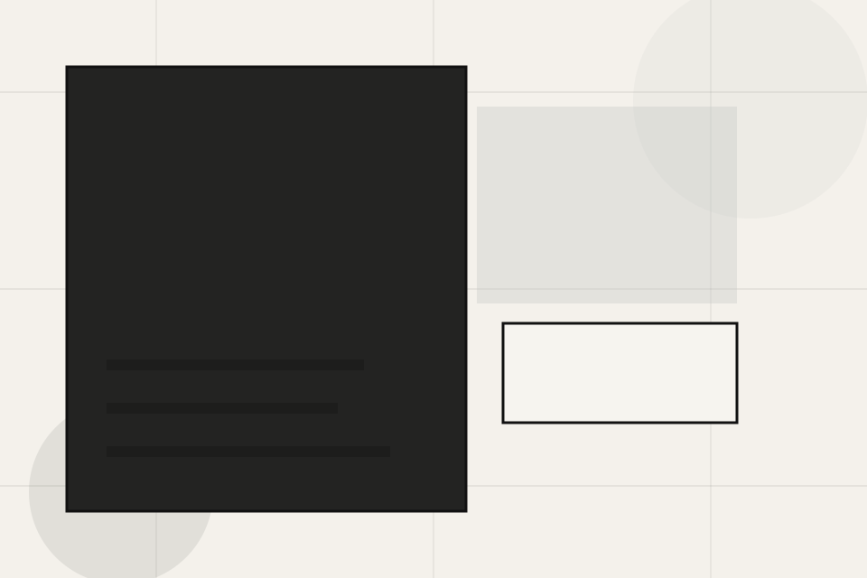
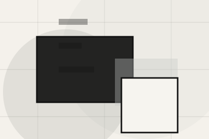
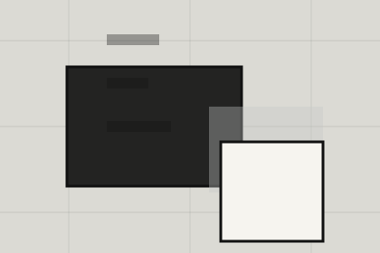

Fit
Who the offer is for, which scope it suits, and when a different route may be better.
Planning / 01
Planning opens as a clear architecture decision hub: what Craft offers, who it helps, why it matters, and which route to take first.
The first screen combines positioning, proof, primary action, and fast internal navigation, so people can act immediately or compare the rest of the planning route with context.
Minimal full-bleed project hero
Select the closest route and Craft keeps the next step, proof, and follow-up expectation aligned with taste and design authority.

Planning / 02
Need frames the pressure behind the visit, then connects it to a practical path visitors can recognise and act on.
The copy avoids blame and panic. It shows the common friction, the practical consequence, and the calmer route Craft uses to move people forward.
Explore PlanningNeed names the real friction visitors bring to the planning route, so the page feels relevant before any claim is made.
The copy connects that friction to practical risk, delay, confusion, or missed opportunity without exaggerating it.
The final cue moves visitors toward a clearer route instead of leaving them with the problem alone.
Planning / 03
Regulations makes commercial comparison easier by showing fit, scope, and terms before architecture visitors ask for the next step.
The layout keeps price-sensitive decisions honest: it separates starting scope, fuller delivery, and ongoing support so the visitor can ask a sharper question.
Explore PlanningWho the offer is for, which scope it suits, and when a different route may be better.
Planning / 04
Applications makes commercial comparison easier by showing fit, scope, and terms before architecture visitors ask for the next step.
The layout keeps price-sensitive decisions honest: it separates starting scope, fuller delivery, and ongoing support so the visitor can ask a sharper question.
Explore PlanningWho the offer is for, which scope it suits, and when a different route may be better.
What is included clearly enough for architecture, planning & built environment visitors to compare value without hidden jargon.
The practical details that should be confirmed before someone asks to discuss the project.
Planning / 05
Drawings makes commercial comparison easier by showing fit, scope, and terms before architecture visitors ask for the next step.
The layout keeps price-sensitive decisions honest: it separates starting scope, fuller delivery, and ongoing support so the visitor can ask a sharper question.
Explore PlanningWho the offer is for, which scope it suits, and when a different route may be better.
What is included clearly enough for architecture, planning & built environment visitors to compare value without hidden jargon.

The practical details that should be confirmed before someone asks to discuss the project.
Planning / 06
Documents makes commercial comparison easier by showing fit, scope, and terms before architecture visitors ask for the next step.
The layout keeps price-sensitive decisions honest: it separates starting scope, fuller delivery, and ongoing support so the visitor can ask a sharper question.
Explore PlanningWho the offer is for, which scope it suits, and when a different route may be better.
What is included clearly enough for architecture, planning & built environment visitors to compare value without hidden jargon.
The practical details that should be confirmed before someone asks to discuss the project.
Planning / 07
Timelines explains the operating sequence so visitors can see how the first request becomes a clear recommendation and follow-up.
The steps are written from the visitor side: what they do first, what Craft clarifies, what they receive, and how support continues.
Explore PlanningHow visitors begin this route and what detail is useful at the first step.
What Craft reviews, filters, or explains before recommending the next move.
What the visitor receives afterward, including support, proof, or a handoff to the next page.
Planning / 09
Approval makes commercial comparison easier by showing fit, scope, and terms before architecture visitors ask for the next step.
The layout keeps price-sensitive decisions honest: it separates starting scope, fuller delivery, and ongoing support so the visitor can ask a sharper question.
Explore PlanningWho the offer is for, which scope it suits, and when a different route may be better.
What is included clearly enough for architecture, planning & built environment visitors to compare value without hidden jargon.
The practical details that should be confirmed before someone asks to discuss the project.
Planning / 10
Craft closes the planning route with a clear action, a quick reminder of the value, and a low-friction way to discuss the project.
Visitors who are ready can use the primary action. Visitors who are still comparing can scan the section links, proof, and support routes before they discuss the project.
Discuss ProjectThe final block keeps the choice simple: act now, compare one more proof route, or send enough detail for a focused response.
Discuss Projecttaste and design authority
A spatial portfolio site with minimal chrome, full-bleed project moments, thin metadata, and studio enquiry. Planning ends with a direct path to discuss the project, plus enough context for visitors who still need to compare.

Discuss ProjectInformation is provided for planning and should be reviewed for the final client, location, and operating rules.